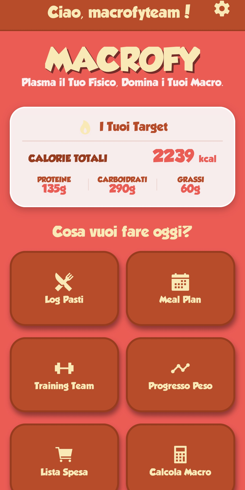

Cos'è Macrofy?
Macrofy è l'app intelligente per il monitoraggio nutrizionale e l'organizzazione del tuo stile di vita. Ti permette di tracciare pasti, peso e allenamenti, calcolare i tuoi macronutrienti, e ricevere un piano alimentare personalizzato. Con uno stile cartoon accessibile e intuitivo, Macrofy rende facile anche ciò che di solito è noioso: mangiare bene, senza stress.
NovitÃ
Cosa la distingue dalle altre app sul mercato
- 🯠Calcolo dei macronutrienti avanzato: molto più preciso rispetto ad altre app, pensato per adattarsi davvero al tuo corpo e al tuo obiettivo.
- 🍽️ Log pasti super intuitivo: basta scrivere cosa hai mangiato in linguaggio naturale, anche tutto insieme. Niente più ricerca stressante di alimenti.
- 🧠Meal Plan AI: generazione automatica di un piano settimanale personalizzato, basato sui tuoi macro e preferenze.
- 💪 Log allenamenti giornaliero: tieni traccia di tutti gli esercizi svolti, RPE, peso e progressi.
- 📥 Programmi da personal trainer: possibilità di acquistare piani ufficiali da professionisti certificati.
- 🌠Community in arrivo: pubblica video, foto, ricette e segui altri utenti nel tuo percorso.
Screenshot


Provala ora su iPhone 📱
Per testare l'app su iOS:
- Scarica l'app TestFlight da App Store
- Apri questo link sul tuo iPhone: